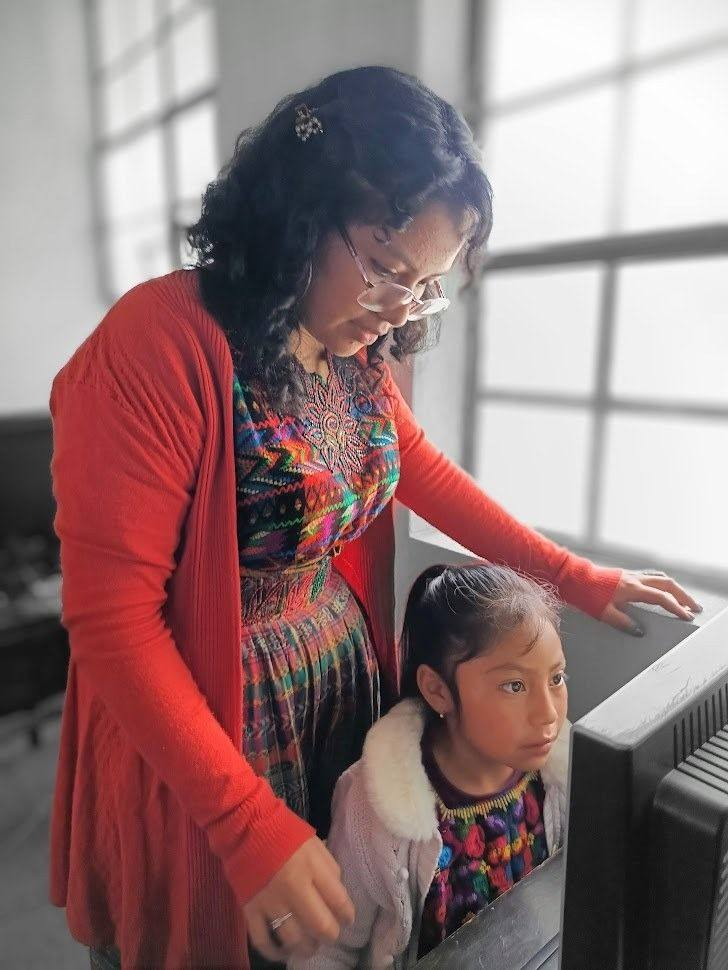
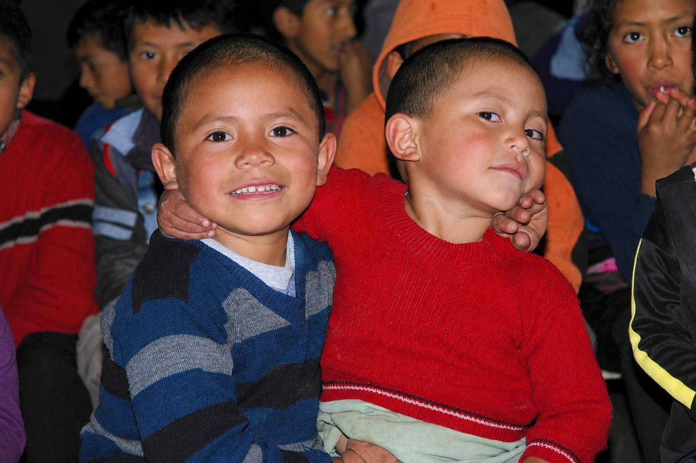

Club Extra
534 children enrolled in 2026
Learning groups in children's own communities, with educational and technology activities built on the CREA+ method.
Learn moreTotonicapán, Guatemala· supporting highland children for decades

Tools for learning, even in the village.

Since 2026, Club Extra children learn with Chispa, an artificial intelligence tutor. Together with computers and internet antennas, it lets them keep learning in their own community.
Technology doesn’t replace teachers or families: it sparks curiosity. During the pandemic, a computer with offline content let a 4th grader in Salitre de Conejo work ahead on his own all the way to 6th-grade content.
Read Jonathan’s storyChispa is an artificial intelligence agent that helps children and young people with the subjects taught in Guatemalan schools. It uses the Socratic method: through questions, it guides students to reach the answer or solve the problem themselves. It is limited to school subjects, so it stays a safe, focused study tool.
Explains, step by step, a topic the child hasn’t seen in class yet.
Goes back over the topics that were hard, at each student’s pace.
It doesn’t do the homework for the child: it asks questions until they find the solution.
| Year | 2023 | 2024 | 2025 | 2026 |
|---|---|---|---|---|
| Computers | 186 | 203 | 240 | 232 |
| Internet antennas | 0 | 1 | 2 | 2 |

Our goal is to move toward every child having their own computer to work with. Every gift brings us closer.
Support this program534 children enrolled in 2026
Learning groups in children's own communities, with educational and technology activities built on the CREA+ method.
Learn more
80 scholarship students in 2026
Scholarships that let students keep studying from preschool all the way to college or a technical program.
Learn more
14 young people completed the program
16 weeks of business challenges that help each young person take the final step toward college.
Learn more
17 young people serving every week
Those who start as participants become volunteers and then facilitators: leadership learned by serving.
Learn more
They already have the curiosity and the drive. Your support helps them keep going, alongside their family and community.